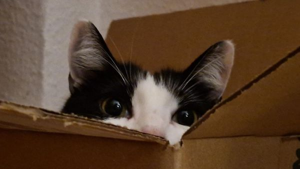

12:51
45
petmon go{{ screenTitle }}
海淀区 Haidian · 附近 {{ nearbyCount }} 只毛孩子
我 me
{{ c.count }}
一撮毛孩子
×
{{ e.type }}
咪想咖啡
威威宠物医院
停狗处
点一下打招呼 · tap to say hi
{{ a.en }}{{ a.cn }}{{ a.tag }}
{{ a.area }} · {{ a.dist }}
附近宠物 · pets nearby
安全事件 · safety
{{ e.title }}{{ e.type }}
{{ e.place }} · {{ e.time }}
宠物日志 · pet log
Catt 今天中午在花坛边晒肚皮，被 3 个路人拍了照。摸鱼一整天。
by Momo · 今天 14:02
天使故事 · angel story

刀疤在这个街区生活了 6 年，去年冬天去了喵星。大家还会在老地方给它留小鱼干。
by 楼下阿姨 · 3 天前
地点评价 · places
咪想咖啡★★★★☆
"店里有猫抓板和水碗，狗狗可进" · 26 条评价
遛宠路线 · walk route
河边慢走圈 · riverside loop
2.1 km · 35 min · 一路 4 只毛孩子
宠物图鉴 · pet dex
● 有新动态 new!
收集附近遇见过的猫狗，天使宠物会保留彩色纪念框。
{{ a.en }}{{ a.cn }}
{{ a.breed }}
设置
Mille
已经在 petmon 活跃 128 天 · 陪伴 {{ collectedCount }} 只毛孩子 · 投喂 {{ myFeeds }} 次 · 走过 8 个地点 🐾
已经在 petmon 活跃 128 天 · 陪伴 {{ collectedCount }} 只毛孩子 · 投喂 {{ myFeeds }} 次 · 走过 8 个地点 🐾
{{ myFeeds }}
投喂 feeds
{{ collectedCount }}
已收集 met
8
去过 spots
成就 achievements
4 / 12 已解锁
最佳投喂人
本周
本周
投喂达人
{{ myFeeds }} 次
{{ myFeeds }} 次
街区常客
8 地点
8 地点
记录者
{{ collectedCount }} 只
{{ collectedCount }} 只
长途遛宠
🔒 25km
🔒 25km
社区守护
🔒 5 提醒
🔒 5 提醒
宠物档案 · read only
{{ current.en }}{{ current.cn }}{{ current.tag }}
{{ current.starStr }}被偶遇 {{ current.seen }}× · {{ current.area }}
{{ current.note }}
今日踪迹 · today
{{ t.t }}
{{ t.p }}
天使宠物 · angel
TA 去了喵星 · 给 TA 留个小礼物吧
确认是 TA · 上传相遇 ➜
{{ current.en }} · {{ current.cn }}
天使宠物卡片 · angel card
在老地方给 TA 留一份小礼物，发布人会收到消息。
已送出{{ giftName }} 🕊
已通知发布人：Mille 在 {{ current.area }} 偶遇了 TA，并收到了礼物。
已通知发布人：Mille 在 {{ current.area }} 偶遇了 TA，并收到了礼物。
上传相遇 · {{ current.en }}
地点 · where
{{ current.area }} · 自动定位
这次相遇 · note
更新动态 · update
发布后你的图鉴会收到新动态，App 用户会收到推送通知
宠物识别 · who is this?
识别结果 · match
放入照片后自动识别 · drop a photo above
识别中… 首次使用需加载模型（约 90MB，本站直供），请稍候
识别失败：{{ matchErrorText }}
{{ m.en }}{{ m.cn }}
{{ m.sub }}
都不是？新宠物，去建档 ➜
宠物建档 · new friend
名字 · name
TA 是 · kind
选择 Tag · tag
今日踪迹 · first trace
当前位置 · 12:51 自动记录
建档并创建今日踪迹 ➜
发布安全事件 · report
类型 · type
事件内容 · what happened
精确位置 · location
拖动选点 · Maple St 街角
提交 · submit
提交后回到地图，附近用户会收到推送提醒
安全事件 · read only
{{ currentEvent.title }}{{ currentEvent.type }}
{{ currentEvent.place }} · {{ currentEvent.time }} · by {{ currentEvent.by }}
精确位置
高德地图 API
{{ currentEvent.desc }}
⚠ 提醒 · notice
{{ currentEvent.warnCopy }}
发布 · publish
拍照识别
遇到毛孩子 snap
遇到毛孩子 snap
发布事件
安全提醒 report
安全提醒 report
消息与通知 · inbox
×
{{ n.title }}
{{ n.body }}
{{ toast }}
地图 map
探索 explore
+
发布 post
图鉴 dex
我的 me
petmon · 把遇见的毛孩子收进地图 🐾